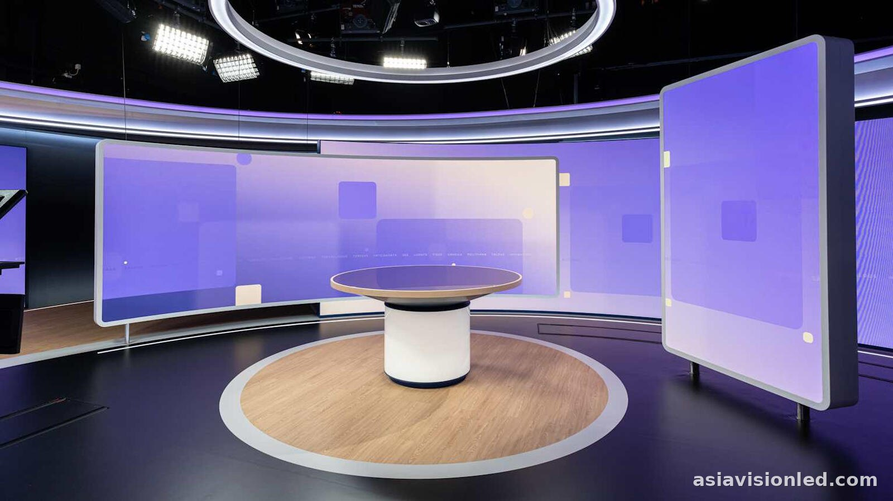
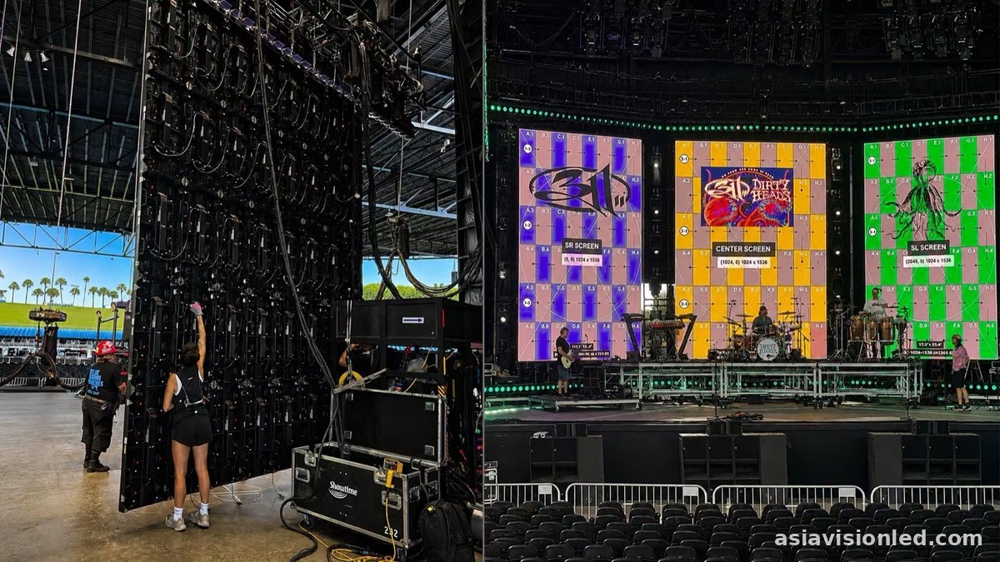
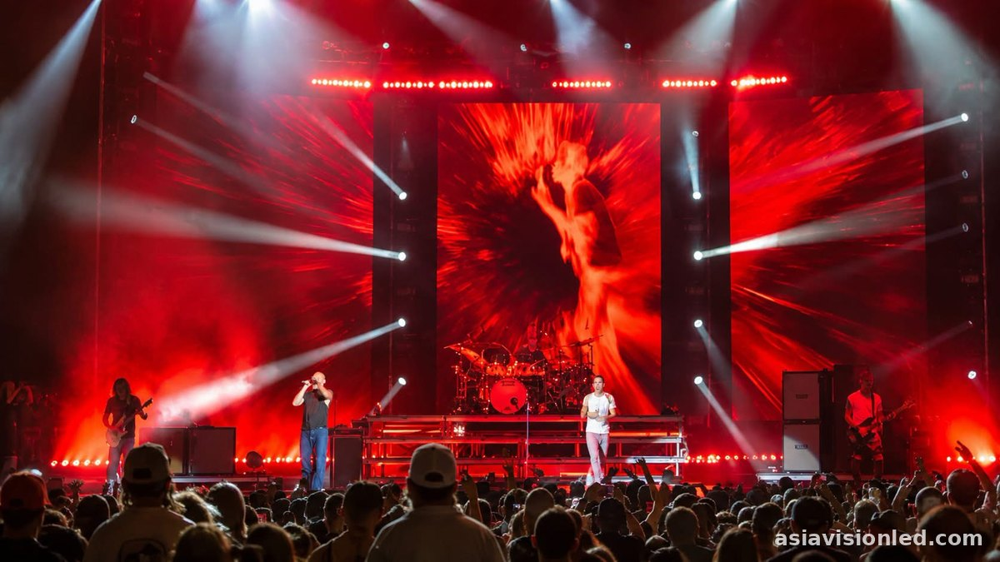
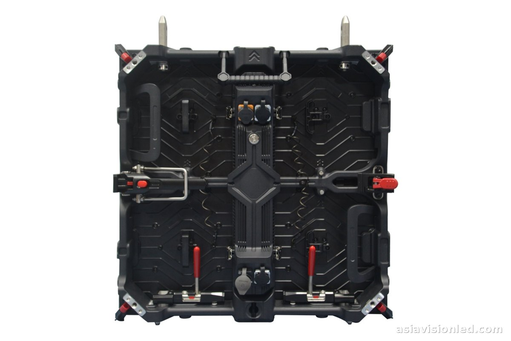

By Danny · 2026-11-17
Genlock is a timing decision, not a brightness figure and not a promise of “zero delay.” It is the arrangement that makes an LED wall follow the same clock as the rest of a production: cameras, a switcher, a replay server, or a house sync generator. A wall can be bright, well calibrated and still unusable on a set if its frames start at a different moment from the cameras, or if two processors drift apart across one canvas.
This guide is for broadcast engineers, virtual-production teams, rental companies and integrators who have to write genlock, frame sync and lock-loss behaviour into a specification. It does not replace a measured latency figure. Latency — how many frames the path adds — is a different question, and should be stated in frames on the same project. Existing Asia Vision pages already treat genlock as a checkbox in the broadcast studio buying guide and as a line in the processor buying guide. This article is the missing specification and test method.
Three ideas are routinely mixed in quotes, and they should be separated in the purchase order.
Content synchronisation means two players or render nodes start the same clip at the same command. That is a playlist or show-control problem. It does not prove that every LED output is updating on the same frame boundary.
Frame synchronisation means the processor’s outputs, or several processors on one wall, update together so the canvas does not tear or roll at a join. You need this on any large wall that is driven as more than one output, even when there is no camera.
Genlock means the LED system locks to an external reference — often analogue black burst or tri-level sync, or a digital reference derived from the production — so its frames align with cameras and the switcher. In an IP plant the equivalent job is usually done with PTP under a profile such as SMPTE ST 2059, which is why the ST 2110 to LED processor guide belongs in the same conversation for those rooms, not as a synonym for a BNC genlock loop.
A processor that “supports genlock” on a brochure line is not automatically configured, locked, or well behaved when the reference disappears. Those are the questions this guide asks you to write down.

Every device in the path should have a clear answer to a single question: whose clock do you follow? A useful chain to draw on one page is:
If any of those layers free-runs, the wall can look fine for a short test and then drift. The control system guide explains the sender and receiving-card roles; the timing specification has to name the models, not only the brand. Asia Vision supplies NovaStar as the default control system and Colorlight as the backup option. Whether a given processor or sender has a genlock input, and which reference formats it accepts, is a model question. This article does not invent a list of stocked units that carry a genlock connector.
You should treat genlock, or an equivalent shared timebase, as a requirement when the wall is part of a timed production rather than a standalone sign.
On a broadcast or studio set the wall is inside the shot. If the LED system is not locked to the same reference as the cameras, you can see temporal artefacts, unstable edges, or a relationship between camera shutter and LED drive that changes as equipment is switched. Camera banding and flicker are related but not identical problems; those belong with refresh rate, scan design and shutter in the camera flicker guide and the refresh rate guide. Genlock will not fix a refresh rate that is too low for the shutter. The two requirements travel together on a studio bid.
Multi-camera productions and virtual-production stages add a stricter version of the same need. Several cameras, a volume, and sometimes a floor or ceiling have to stay in one timebase. Frame remapping and related camera-sync features are covered on their own pages; this article only insists that the reference architecture is written down first. See also the XR LED wall spec guide and the virtual production guide.
Sports venues and multi-processor canvases need at least frame alignment across every output, even when no one is genlocking to a broadcast truck. If two processors free-run, a join in the middle of a videoboard can show a one-frame tear on motion. That is a specification item, not a hope that “they will be fine because they are the same model.”

On a concert or corporate stage the wall is often doing image magnification. The audience compares the screen with the real performer. Delay is the complaint people name first, and it should be measured in frames. Timing alignment still matters when several screens, a switcher and a house camera system share the stage. If the IMAG screens and a playback wall are not on the same timebase, cuts and camera switches can look loose even when each screen is sharp.
Not every rental backdrop needs a genlock input. A single wall showing a playback loop in a ballroom usually needs a stable internal clock, correct frame-rate conversion, and enough outputs to hold the canvas together. Forcing genlock into that job adds a reference distribution problem that the crew may not be staffed to support. The honest specification names the use: standalone playback, multi-output frame sync, or lock to house or truck reference.

Write the following into the request, and ask every bidder to answer the same fields.
| Question | Why it matters |
|---|---|
| What reference inputs does this exact model accept (black burst, tri-level, digital, PTP)? | A “genlock” label does not say which connector or which standard. |
| Where is lock status shown, and is there an alarm on the processor or in software? | A technician should not have to guess whether the system is locked. |
| What happens when the reference is lost or intermittent — freeze, free-run, switch to a backup, or an undefined glitch? | A wall that looks normal in a short test can fail in the show when a cable is pulled. |
| How many outputs share that lock, and what inter-output timing error is stated? | One canvas driven by several ports or several processors needs a number, not a promise. |
| Which frame rates, and which conversion, are supported while locked? | A 59.94 production and a 50 Hz wall are a conversion problem, not a cable problem. |
| Does locking change processing latency, and is the latency stated in frames for that mode? | Genlock and delay are separate; both must be true at once in a studio. |
If the answer is only “supported where required,” treat it as unknown. The processor guide already warns that pixel capacity per output is the figure people forget to ask for. Timing support is the other figure that disappears into a brochure line.
A timing test uses the real cameras, the real frame rates and the real shutters, not only a still pattern on a laptop. Record the setup: reference source, cable or network path, processor model and firmware, output map, receiving-card configuration, and the behaviour when the reference is removed and restored. A moving test pattern across cabinet joins will show a tear that a slide will hide. If several brightness presets will be used on air, test more than one; drive settings can change how artefacts appear, even when the lock itself is valid.
Keep the recordings and the configuration files with the commissioning pack. The commissioning acceptance guide covers the wider handover; timing should be a named section in it, not a verbal “it looked locked.”
A short, reusable clause is better than a single word in a feature list. For example: the LED system shall lock to the stated house or truck reference; lock status shall be visible to the operator; behaviour on reference loss shall be stated in writing; all outputs that form one canvas shall remain frame-aligned within the stated tolerance; latency in the locked mode shall be stated in frames; and acceptance shall include a camera test at the production’s frame rates and shutters, plus a reference-loss test. Add colour and flicker requirements by linking to the TLCI and SSI guide and the flicker guide, rather than overloading this clause with every studio topic.
Asia Vision can help you match a wall to a control family — NovaStar by default, Colorlight as the backup — and can work from the processor and receiving-card models you already have. We will not invent a genlock specification for a unit that has not been identified. Send the room’s reference type, the camera format, the number of processors and the wall size, and we will tell you what can be quoted and what must be confirmed against the processor datasheet.
Send the reference type, camera format, processor count and wall size. We will tell you what can be quoted for a NovaStar or Colorlight path. Email info@asiavisionled.com or message us on WhatsApp at +86 172 7666 5558.
Request Timing GuidanceChat on WhatsApp